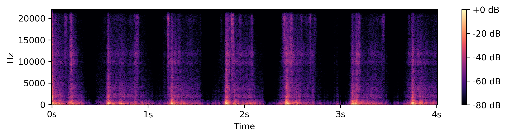
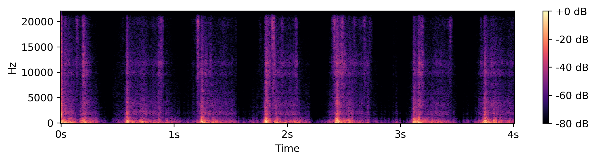
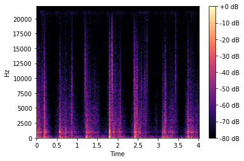
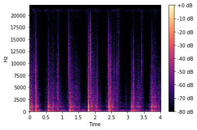
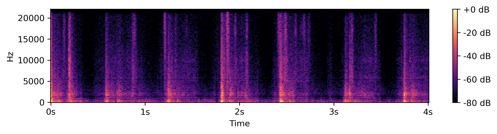
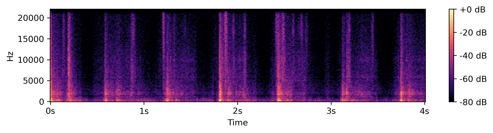
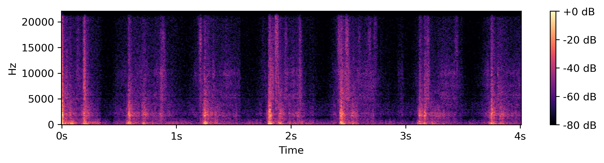
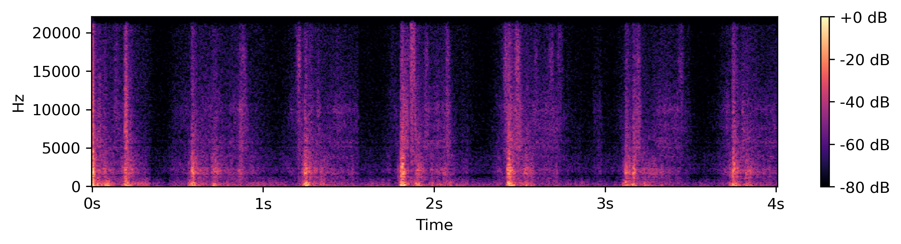

Creative usage of timbre control
We qualitatively demonstrate how interpolating between two conditioning similarity scores produces distinct timbres. For this example, we randomly selected a sound from our test dataset and extracted its loudness and spectral centroid as input. All channels of the similarity score were fixed at 1, except for the first channel (C_1) and the second channel (C_2) which correspond to footsteps on metallic boards and footsteps on gravel, respectively. These channels were interpolated from 0 to 1 (C_1) and 1 to 0 (C_2). The resulting spectrograms reveal a clear progression in timbre. Initially, the signals exhibit prominent harmonics in the higher frequencies, characteristic of footsteps on metallic boards. As the interpolation progresses, these harmonics gradually transition into noisier signals lacking harmonic structure, which are indicative of footsteps on gravel. For a more interactive experience, please visit our Colab notebook.C1=0.0, C2=1.0

C1=0.2, C2=0.8


C1=0.4, C2=0.6
C1=0.6, C2=0.4


C1=0.8, C2=0.2


C1=1.0, C2=0.0

